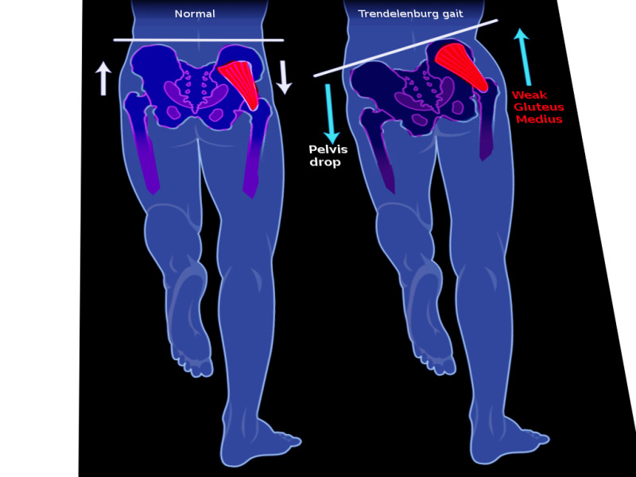
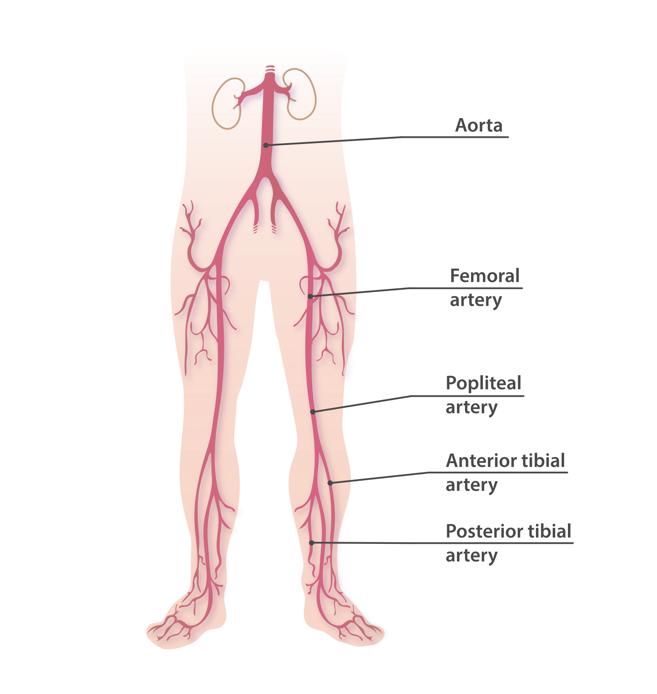

Lesson 0003
Every shift brings lower limb pathology: the hip fracture at 3am, the dislocated knee with a threatened popliteal artery, the drunk who can't dorsiflex their foot. You cannot assess a tibial plateau fracture without understanding the common peroneal nerve. You cannot reduce a hip dislocation without respecting the sciatic nerve. MRCEM Primary tests lower limb anatomy as applied clinical knowledge — nerve lesion vignettes, fracture complications, and gait abnormalities are board favourites.
Like the brachial plexus in the upper limb, the lumbosacral plexus is tested in every sitting. It supplies all motor and sensory innervation to the lower limb. Divided into lumbar plexus (L1–L4) and sacral plexus (L4–S4).
| Nerve | Roots | Key Motor Supply | Sensory | Clinical |
|---|---|---|---|---|
| Femoral n. | L2, L3, L4 | Anterior thigh: quadriceps (knee extension), sartorius, pectineus | Anterior thigh + medial leg/ankle (saphenous n.) | Injury → weak knee extension + absent knee jerk. Psoas abscess, pelvic surgery, femoral artery catheterisation |
| Obturator n. | L2, L3, L4 | Medial thigh: adductors (adductor longus/brevis/magnus, gracilis, obturator externus) | Medial thigh | Injury → weak hip adduction. Pelvic surgery, obturator hernia |
| Lateral femoral cutaneous n. | L2, L3 | None (pure sensory) | Lateral thigh | Meralgia paraesthetica — entrapment under inguinal ligament → burning lateral thigh pain |
| Nerve | Roots | Key Motor Supply | Sensory | Clinical |
|---|---|---|---|---|
| Sciatic n. | L4–S3 | Hamstrings (via tibial division) + all muscles below knee (via tibial + common peroneal divisions) | Posterior thigh, entire leg and foot (except medial leg/ankle — saphenous n.) | Posterior hip dislocation (most common). Piriformis syndrome. Largest nerve in the body — exits pelvis through greater sciatic foramen BELOW piriformis |
| Superior gluteal n. | L4, L5, S1 | Gluteus medius + minimus, tensor fasciae latae | None (pure motor) | Injury → Trendelenburg gait (pelvis drops on unsupported side). Intramuscular injection too high/medial |
| Inferior gluteal n. | L5, S1, S2 | Gluteus maximus (hip extension) | None (pure motor) | Injury → difficulty rising from chair, climbing stairs |
| Pudendal n. | S2, S3, S4 | External anal + urethral sphincters, pelvic floor | Perineum | Pudendal nerve entrapment in Alcock's canal. S2–S4 keeps the pee off the floor |
The hip is a ball-and-socket joint (femoral head + acetabulum). It sacrifices mobility for stability — unlike the shoulder.
| Feature | Details | Clinical Significance |
|---|---|---|
| Blood supply to femoral head | Medial + lateral circumflex femoral arteries (from profunda femoris) → retinacular arteries → artery of ligamentum teres (from obturator a., minor contribution) | Intracapsular femoral neck fracture → retinacular vessels torn → avascular necrosis of femoral head. The artery of ligamentum teres is insufficient to sustain the head alone |
| Hip dislocation | Posterior = 90% (dashboard injury, shortened + internally rotated leg). Anterior = 10% (externally rotated + abducted) | Posterior dislocation → sciatic nerve at risk. Common peroneal division most vulnerable (lateral, more superficial). Document foot dorsiflexion before AND after reduction |
| Stability | Bony (deep acetabulum), ligamentous (iliofemoral — strongest ligament in body), muscular (glutei, short external rotators) | Hip dislocation requires significant force (high-energy trauma, except prosthetic hips). Native hip = hard to dislocate; THR = easier |
| Compartment | Key Muscles | Nerve | Action | Key Points |
|---|---|---|---|---|
| Anterior | Quadriceps (rectus femoris, vastus lateralis/medialis/intermedius), Sartorius | Femoral n. (L2–L4) | Knee extension + hip flexion (rectus femoris crosses both joints) | Quadriceps tendon → patella → patellar ligament. Absent knee jerk = femoral nerve lesion (L3, L4) |
| Medial | Adductor longus/brevis/magnus, Gracilis, Obturator externus | Obturator n. (L2–L4) Adductor magnus also gets tibial n. (sciatic) |
Hip adduction | Adductor magnus has dual innervation — obturator (adductor part) + tibial division of sciatic (hamstring part). Adductor hiatus transmits femoral vessels to popliteal fossa |
| Posterior | Hamstrings: Biceps femoris (long + short heads), Semitendinosus, Semimembranosus | Tibial division of sciatic n. (all except short head of biceps — common peroneal division) | Hip extension + knee flexion | Short head of biceps femoris = ONLY hamstring by common peroneal n. All others = tibial division. Hamstring avulsion = ischial tuberosity |
🧠 Mnemonic: Serve And Volley Next Ball
Semimembranosus → Artery (popliteal) → Vein (popliteal) → Nerve (tibial) → Biceps femoris
| Ligament | Attachments | Function | Injury Mechanism |
|---|---|---|---|
| ACL | Anterior intercondylar area of tibia → medial aspect of lateral femoral condyle | Prevents anterior translation of tibia on femur | Non-contact pivoting injury, hyperextension. Lachman test > anterior drawer |
| PCL | Posterior intercondylar area of tibia → lateral aspect of medial femoral condyle | Prevents posterior translation of tibia | Dashboard injury — tibia driven posteriorly. Posterior sag sign |
| MCL | Medial femoral epicondyle → medial tibial condyle | Resists valgus stress | Valgus force to knee. Attached to medial meniscus |
| LCL | Lateral femoral epicondyle → head of fibula | Resists varus stress | Varus force. Not attached to lateral meniscus |
| Compartment | Key Muscles | Nerve | Action | Key Points |
|---|---|---|---|---|
| Anterior | Tibialis anterior, EHL, EDL, Peroneus tertius | Deep peroneal n. (from common peroneal) | Dorsiflexion + toe extension + foot inversion (tibialis anterior) | Foot drop = anterior compartment failure. Deep peroneal n. sensory: first web space (between great + 2nd toe) |
| Lateral | Peroneus longus + brevis | Superficial peroneal n. (from common peroneal) | Foot eversion + weak plantarflexion | Superficial peroneal n. sensory: dorsum of foot (except first web space) |
| Superficial posterior | Gastrocnemius, Soleus, Plantaris | Tibial n. | Plantarflexion. Gastrocnemius also flexes knee | Achilles tendon = combined gastrocnemius + soleus tendons. Soleus is the workhorse of plantarflexion — mostly type I fibres (posture) |
| Deep posterior | Tibialis posterior, FDL, FHL, Popliteus | Tibial n. | Foot inversion (tibialis posterior), toe flexion, unlocks knee (popliteus) | Tom, Dick, And Very Nervous Harry: Tibialis posterior, flexor Digitorum longus, posterior tibial Artery, tibial Vein, tibial Nerve, flexor Hallucis longus — order at the medial malleolus |
| Side | Ligament Complex | Components | Injury |
|---|---|---|---|
| Lateral | Lateral ligament complex | ATFL (anterior talofibular — weakest, most commonly injured) CFL (calcaneofibular) PTFL (posterior talofibular — strongest) |
Inversion injury (rolling ankle). ATFL → CFL → PTFL in order of injury severity |
| Medial | Deltoid ligament | 4 parts: tibionavicular, tibiocalcaneal, anterior + posterior tibiotalar | Eversion injury. Much stronger than lateral — eversion injury more likely to cause medial malleolus fracture than isolated ligament rupture |
The foot has three arches (medial longitudinal, lateral longitudinal, transverse) maintained by bony configuration, ligaments (spring ligament = plantar calcaneonavicular — most important for medial arch), and dynamic support (tibialis posterior, peroneus longus, intrinsic foot muscles).
MRCEM Primary loves lower limb nerve lesion questions. You must know the classic presenting signs, anatomical level of injury, and distinguishing features.
| Nerve | Classic Deformity | Motor Loss | Sensory Loss | Common Scenarios |
|---|---|---|---|---|
| Common peroneal n. | Foot drop + high-stepping gait | Dorsiflexors (tibialis anterior) + evertors (peronei). Toe extensors. Foot slap when walking | Dorsum of foot (superficial peroneal) + first web space (deep peroneal) | Fibular neck fracture, tight plaster cast below knee, prolonged leg crossing, lithotomy position. Most common lower limb mononeuropathy |
| Tibial n. | Loss of plantarflexion, cannot stand on toes | All posterior leg muscles + intrinsic foot muscles (claw toes) | Sole of foot (medial + lateral plantar nerves) | Knee dislocation (popliteal fossa), tarsal tunnel syndrome |
| Sciatic n. | Flail foot + weak knee flexion | Hamstrings + everything below knee. Foot drop + loss of plantarflexion | Posterior thigh, entire leg and foot (except medial leg/ankle — saphenous n.) | Posterior hip dislocation, intramuscular injection (wrong quadrant). Common peroneal division more affected than tibial (more superficial) |
| Femoral n. | Cannot extend knee. Buckling when walking downstairs | Quadriceps → weak knee extension, sartorius | Anterior thigh + medial leg/ankle (saphenous n.) | Pelvic surgery, psoas abscess, femoral artery catheterisation. Absent knee jerk (L3, L4) |
| Obturator n. | Weak hip adduction. Waddling gait | Adductor muscles | Medial thigh | Pelvic surgery, obturator hernia. Rare in isolation |
| Superior gluteal n. | Trendelenburg gait — pelvis drops on opposite side when standing on affected leg | Gluteus medius + minimus → cannot abduct hip when contralateral foot is off ground | None (pure motor) | Intramuscular injection in superomedial quadrant of buttock. Trendelenburg test positive |


Answer each question from memory before clicking. These are constructed to real MRCEM difficulty — clinical vignettes testing nerve localisation and anatomical reasoning.
Q1. A 32-year-old man sustains a fracture of the right fibular neck while playing football. Three weeks after cast removal, he complains that his right foot "slaps" when he walks and he cannot clear his foot from the ground during the swing phase of gait. On examination, he cannot dorsiflex his right foot or extend his toes. Eversion of the foot is also weak. Sensation is reduced over the dorsum of the foot and the first web space. However, plantarflexion is strong and the ankle jerk is intact. Which nerve is injured, and at what level?
Q2. A 28-year-old driver is brought to the ED following a head-on collision. His right hip is flexed, internally rotated, and adducted — a classic posterior hip dislocation. After successful closed reduction under sedation, he is noted to have weakness of dorsiflexion AND plantarflexion of the right foot, with absent ankle jerk but intact knee jerk. Sensation is reduced over the entire foot and posterior thigh. Which nerve has been injured?
Q3. A junior doctor is performing a femoral venous blood gas in a hypotensive patient. They palpate the femoral artery just below the inguinal ligament and insert the needle immediately medial to the pulsation. From lateral to medial, the structures within the femoral sheath are arranged in which order (NAVEL)?
Q4. All of the following muscles in the posterior compartment of the thigh are innervated by the TIBIAL division of the sciatic nerve EXCEPT:
Q5. A 55-year-old man receives an intramuscular injection of an antibiotic into the upper outer quadrant of his right buttock. Two weeks later, he complains of an abnormal gait. On examination, when asked to stand on his right leg, his left pelvis drops significantly. He has no sensory deficit and no weakness of hip flexion, knee extension, knee flexion, or ankle movement. Which nerve has been injured, and which muscle is primarily affected?
Q6. An 82-year-old woman falls at home and sustains a displaced intracapsular fracture of the right femoral neck. She undergoes a hemiarthroplasty. The femoral head is sent to pathology and shows avascular necrosis (AVN). Disruption of which blood vessel is primarily responsible for AVN of the femoral head following an intracapsular fracture?
Q7. A 45-year-old warehouse worker presents with a 3-month history of progressive right-sided foot drop. He also reports lower back pain radiating down the lateral aspect of the right leg. On examination, he cannot dorsiflex his right foot or extend his great toe. Sensation is reduced over the lateral leg and dorsum of the foot. However, foot eversion is preserved, and the ankle jerk is intact. Straight leg raise test is positive at 40°. This presentation is MOST consistent with:
Q8. A 22-year-old rugby player is tackled from the lateral side during a match. His right foot is planted on the ground, and his knee sustains a valgus force with external rotation of the tibia. MRI confirms the "unhappy triad" (O'Donoghue's triad). Which three structures are injured?
📖 Netter's Atlas of Human Anatomy — Lower Limb plates. Pay special attention to the lumbosacral plexus (Plate 486–487), femoral triangle (Plate 486), and nerve lesion summaries.
📖 Gray's Anatomy for Students (Drake, Vogl, Mitchell) — excellent clinical correlations for lower limb nerve lesions.
🌐 RCEMLearning — Basic Sciences → Anatomy → Lower Limb. Pay attention to the hip and knee sections which tie directly to MRCEM Primary questions.
📋 Plan: 18-Week Study Plan
🔬 Real exam intel: Lower limb nerve lesions are tested in every sitting. Common peroneal nerve at fibular neck is the single highest-yield lower limb anatomy question. The exam expects you to differentiate L5 radiculopathy from CPN palsy based on eversion (preserved in L5, lost in CPN). Pass rate ~25%, pass mark ~108/180.
🧠 Lower Limb Nerve Lesions
Clinical anatomy of femoral, obturator, sciatic, common peroneal, and tibial nerve injuries.
🧠 Lumbosacral Plexus — Lumbar + Sacral Plexus
Comprehensive overview of the lumbar (L1–L4) and sacral (L4–S4) plexuses.
🧠 Femoral Triangle — Boundaries and Contents
SAIL boundaries, NAVEL contents, femoral sheath and canal anatomy for MRCEM.
🧠 Foot Drop: Common Peroneal Nerve vs L5 Radiculopathy
How to differentiate the two most common causes of foot drop — a classic MRCEM question.